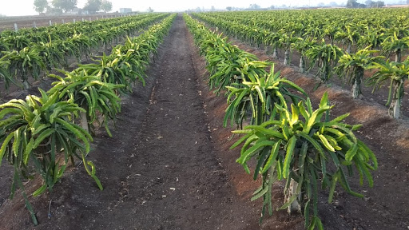

Abha Toppo resides in Hatighisa village in Darjeeling district of North Bengal, around 20 kilometres from Siliguri city, the gateway to northeast India. Her village is a few metres away from the Naxalbari block that had garnered global attention for the armed peasants’ revolt of 1967. The 45-year-old had worked as a tea plucker in a tea garden for over two decades soon after her marriage in 1995. She earned Rs. 170 per day (approximately Rs. 5000 a month) as wages from the tea garden. But now her income often crosses Rs. 100,000 or more per month thanks to the dragon fruit or strawberry pear – a pink fruit with green scales on the outside and white flesh with black seeds within.
It all began in 2013 when Toppo attended an agriculture workshop at the University of North Bengal. “The scientists coached us about the importance of dragon fruit and higher returns. I bought just four saplings apprehending whether it could be of any use and planted them on my land,” she said. “But to my surprise, the flowers blossomed and the fruit came out in the next 18 months. It was delicious. I got around 5 kg of fruit which I sold at around Rs. 400 per kg. It was a handsome profit as compared to my tea garden wages,” Toppo told Mongabay-India.
Now, Toppo has over 123 plants of dragon fruit and she sells the fruit and stem cuttings that are used as saplings for the fruit. According to regional agricultural experts, she is the first woman to have started dragon fruit farming in West Bengal. Like Toppo, over 2,000 farmers in Bengal are switching over to dragon fruit cultivation in recent years for income generation. Reports of the immunity-boosting capacity of the plant have escalated its demand during the pandemic.
Scientifically known as Hylocereus undatus, the dragon fruit is grown in countries like Malaysia, Thailand, the Philippines, the USA and Vietnam.
Dragon fruit sprouted in home gardens, but gradually spread
According to G. Karunakaran, Principal Scientist at Indian Institute of Horticultural Research (ICAR-IIHR), dragon fruit production began in India as a hobby in the 1990s but it was restricted to home gardens. “It was not done on a large scale at that time and was restricted to gardening as people were apprehensive about its growth since it is a cactus. It was started on a mass scale by the scientists of North Bengal University in 2013 after they informed the farmers about its potential and income opportunities,” Karunakaran told Mongabay-India.
“During some online research, I came across dragon fruit being grown by the scientists of Bangladesh Agricultural University (BAU). I read about its rich properties and higher returns. It seemed to be a good alternative for farmers in north Bengal who face a lack of proper irrigational facilities,” said Amrendra Kumar Pandey, technical officer at Centre for Floriculture and Agri-Business Management (COFAM) in the University of North Bengal that initiated the cultivation of dragon fruit in the state.
“We procured around 150 saplings from BAU and distributed them among the farmers and also planted some in our campus. We were sceptical about its growth but the results were overwhelming. The farmers got a good price. We estimate the annual production to have increased to around 600 metric tonnes from 500 kg in 2014,” he said.
“Initially, we had started with near about one acre of land scattered in different blocks and agri-zones of north Bengal. After seven to eight years, its area under cultivation has increased to around 200 acres in different parts of north Bengal from small farmers to progressive farmers,” added Pandey.
Ranadhir Chakraborty, a professor and project co-ordinator at COFAM says that the fruit can grow in the extremes of temperatures and poorest of soils, but it is best suited for tropical climate. “The dragon fruit is a cactus species that doesn’t require much water and specific soil quality, but pH of the soil should be in the range of 5.5-6.5 (slightly acidic). It also grows well in the desert-like conditions of Mexico. Organic fertilisers are used for cultivation without any pesticides as land is still not polluted with industries in north Bengal. It started on a small scale, but has become a stable horticultural crop in north Bengal,” Chakraborty said.
“The gestation period is around 16-18 months. The fruit has important antioxidants like flavonoids, phenolic acid, and betacyanin and is very delicious. Moreover, the fruit has high fibre and promotes the growth of healthy gut microflora. The branches of the trees are cut and used as saplings for further growth. It doesn’t need a regular water supply except during severe summers. The food is harvested from May to October. It’s a high-value crop with a low mortality rate,” he said.
Prabha Tirkey Chacko, 50, a farmer who stays at Hansquea village near Badgodra airport in north Bengal says that she started farming in 2016 and has 400 plants of dragon fruits, “I got around 70 kg of fruit from the plants which were then sold for Rs 450 per kg in 2018. I did plantation again last year as COVID-19 led to the surge of demand for the fruit. I am waiting for the yield but buyers have already started thronging my house. The pandemic has hiked its demand because of the immunity-boosting power.”
Cost-intensive initially
Farmers, however, acknowledge that there is an initial cost involved in cultivating the plant as it is a climber and needs the support of a pole. A cement pole has to be erected that supports the plant. Four plants can be supported on a single cement pole that costs around Rs. 200-250. “It is better to start with a small patch of land and expand once the returns start coming,” suggested Pavitra Roy, 37, a farmer at Choagari village in Uttar Dinajpur district of West Bengal.
“Earlier, I used to cultivate vegetables but suffered losses. I started dragon fruit farming with 200 saplings in 2018 on just five decimal (0.05 acres) of land and made a profit of around Rs. 40,000 last year. I have now planted 1200 saplings in 35 decimal (0.35 acres) area anticipating profits. The demand is very high locally and also in the northeast during the pandemic which makes it difficult to supply to other parts of the country. But the fruit was being dispatched to central and northern states in India before COVID-19,” said Roy.
The farmers said that the fruit has got better prospects and a bright future only if the government intervenes and offers a subsidy to them. They say subsidies on concrete pole pillars, trellises, drip irrigation, and planting materials will help small farmers to come forward and take up the cultivation of the plant as the initial investments in support structures are quite high, which is why most of the poor farmers are not opting for it.
This article was originally published on Mongabay.com.